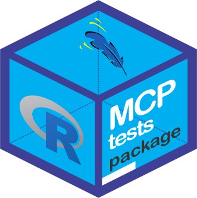

R como uma ferramenta acadêmica
Apresentação com selo DC

Acesso ao material dessa apresentação
Nota
Essa apresentação terá um viés, pois apesar do poder que a ambiente R tem, muitos dos exemplos estarão dentro das minhas necessidades/limitações pessoais e profissionais. Portanto, um resultado do que experimento e venho experienciando!
Histórico sobre o ambiente R
- Criadores Ross Ihaka e por Robert Gentleman (Nova Zelândia), 1993
- Baseado na linguagem S, criado por John Chambers e colaboradores (Primeira versão 1976)
- Atualmente é mantida por colaboradores voluntários em todo o mundo
Histórico sobre o ambiente R
Curso R (Nível Básico)
Curso R (NI)
Rapidinhas do R
Ferramentas do R além do fim Estatístico
- Análises Estatísticas ❌
- Criação e divulgação de materiais científicos:
- Materiais Dinâmicos (HTML, JavaScript, CSS,
\(\LaTeX\),R, PDF) ✔️ - Materiais estatísticos (HTML, PDF, EPUB, WORD, SLIDES) ✔️
- Materiais Dinâmicos (HTML, JavaScript, CSS,
Ferramentas do R além do fim Estatístico
- Desenvolvimento de pacotes ✔️
- Criação de GUIs para pacotes (Pacotes
tcltk,GTK+,shiny) ✔️ - Documentação de pacotes (Vignettes, tutorial de pacote) ✔️
- Criação de GUIs para pacotes (Pacotes
- Divulgação de todos esses materiais ✔️
O que será necessário para usar essas ferramentas?
- Instalação do
Re RStudio/Pandoc - No
Rinstalar os pacotes:rmarkdowneknitr- Pacotes mais importantes!shiny- Pacote para criação de materiais dinâmicosdevtoolseusethis- kit de ferramentasrsconnect- Pacote para enviar seu arquivo para shinyapps.io
O que será necessário para usar essas ferramentas?
- No
Rinstalar os pacotes:tinytex- Latex (Caso você não queira instalar o\(\LaTeX\))rticles- Escrever Artigosthesisdown- Escrever Tesesbookdown- Escrever Livros (HTML, PDF, ePub, Kindle)
O que será necessário para usar essas ferramentas?
- No
Rinstalar os pacotes:blogdownedistill- Criação de blogs, websitespostcards- Criação de um cartão de visitalearnr- Criação de tutoriais para aprender Rpkgdown(Documentação em HTML para pacotes R) eusethisourmarkdown(Criação de Vignettes)
O que será necessário para usar essas ferramentas?
- No
Rinstalar os pacotes:tcltk(Existem muitos outros pacotes!) - GUI’smanipulateeshiny- gráficos interativos no RStudio escatterplot3d- Gráficos em 3dexams- Criação de Provas para disciplinas + MOODLE
\(\LaTeX\), MS Word (ou similares)
R Markdown
Três componentes básicos:
- Metadados: O corpo do documento
- Texto: Assunto dissertado
- Código: Linguagem de interesse
LEMBRETE: A extensão de um arquivo R Markdown é: .Rmd
Material de apoio ao R Markdown
Material de apoio ao R Markdown
O básico no R Markdown: https://rmarkdown.rstudio.com/authoring_basics.html
A ideia dos pacotes nos documentos dinâmicos: https://jreduardo.github.io/semanest-ufpr2017/
Para leitura: http://cursos.leg.ufpr.br/prr/capDocDin.html
R Markdown: Documentos estatísticos
Aplicações:
R Markdown: Documentos dinâmicos
Recursos do Shiny:
Exemplos:
Criação de Websites
Exemplos de Websites
Exemplos:
- R Markdown no RStudio
- Website pessoal de Rob J Hyndman
- Website pessoal de Amber Thomas
- Website pessoal de Emi Tanaka
Exemplo de Postcard
- Exemplo: Ben Dêivide
Exemplo de Dashboard
Outros exemplos de Dashboards
R Markdown: Relatórios programados
- Exemplo: Mine Çetinkaya-Rundel
R Markdown: Relatórios programados (Aplicação)
- Nomes dos professores do DEFIM/UFSJ e númerode suas salas;
- Vamos fazer um documento em PDF, cujo nome desses arquivos serão os nomes dos professores, com algum texto identificando as suas salas.
R Markdown: Livros
- Site: https://bookdown.org/
- Exemplo: EPAEC, EAMBR
R Markdown: Artigos e Teses
-
Pacote
bookdown(Tese) -
Pacote
rticles(Artigo):install.packages("rticles") -
Pacote
thesisdown(Tese):
if (!require("remotes"))
install.packages("remotes", repos = "https://cran.rstudio.org")
remotes::install_github("rstudio/bookdown")
remotes::install_github("ismayc/thesisdown")
R Markdown: Livros (Aplicações)
R Markdown: Slides (Aplicações)
Documentação para pacotes
- Pacote
pkgdown: ex.: midrangeMCP - Vignettes (Pacote
usethis):usethis::use_vignette()
Interface Gráfica ao Usuário
- Exemplo do pacote
tcltk:MCPtests

- Exemplo do pacote
shiny:esquisse
Documentos para aprendizagem do R
- Pacote
learnr: ex.: Estatística Experimental
Aplicação de provas (Academia)
Gráficos 3D ($\LaTeX$ e R)
- Pacote
scatterplot3d